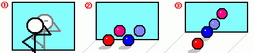

하지만 이건 분명히 잘못된 말이다.
이제부터 내가 직접 그린 그림을 통해 그 사실을 설명해주겠다.
그림①을 보자.
졸라맨이 거울을 보고 서 있다.
거울 앞의 졸라맨은 오른손으로 머리를 긁고 있는데 거울 속의 졸라맨은 왼손으로 머리를 긁고 있다.
사실인가?
그렇다면 좌우가 반대로 보이는것이 맞지 않는가?
그림②를 보자.
빨간 공이 왼쪽에. 파란공이 오른쪽에 있다.
이건 거울 속에서도 마찬가지다.
빨간공이 왼쪽, 파란공이 오른쪽이다. 너무 당연한 모습이다.
뭐가 다른가?
사실 거울은 좌우를 바꾸는게 아니라 거리를 바꿔 보여준다.
그림③을 보자.
빨간공이 앞에 있고 파란공이 뒤에 있다.
거울 속에서는 파란공이 앞에 있고 빨간 공이 뒤에 있다.
거울의 원리를 생각한다면 이것이 바로 정답이다.
즉, 거울은 거울이 놓인 곳을 기준으로 거리를 반대로 보여준다.
좌우는 변함이 없다는 뜻이다.
거울이 좌우를 그대로 보여준다는 사실은 자동차의 룸미러나 사이드미러를 보면 확실히 알 수 있다.
거울 속에서 차가 오른쪽으로 이동하면 실제로도 그런 것이다.
머리속으로 복잡하게 생각할 필요도 없다.
보이는것이 실체다.
그렇다면 왜 거울이 좌우를 반대로 보여준다고 생각하게 되는 것일까?
그것은 일종의 본능이다.
일종의 감정 이입. 사상 이입이랄까?
거울 속의 '나'를 기준으로 생각하게 되는 것이다.
거울 속의 나. 그것은 실제의 나를 바라보고 있다.
거울 속의 내가 되어서 머리속에선 이미 좌우를 반대로 생각하는 것이다.
그래서 거울속의 나는 오른손에 시계를 차고 있다고 생각하게 된다.
이건 그냥 농담이 아니다.
말장난도 아니다.
그냥 사실이다.
당신도 알고 있는.